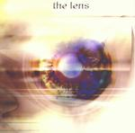

| Artist: | The Lens |
| Title: | A Word In Your Eye |
| Label: | GEP SPV 085-41892 |
| Length(s): | 54 minutes |
| Year(s) of release: | 2001 |
| Month of review: | [03/2002] |
| 1) | Sleep Until You Wake | 7.11 |
| 2) | Choosing A Farmer (part 1) | 8.10 |
| 3) | On Stephen's Castle Down | 2.27 |
| 4) | Shafts Of Light | 2.52 |
| 5) | Childhood's End | 5.51 |
| 6) | Frost And Fire | 6.27 |
| 7) | Of Tide And Change | 8.56 |
| 8) | From The Sublime | 6.38 |
| 9) | Choosing A Farmer (part 3) | 5.32 |
Choosing A Farmer (part 1) starts with acoustic guitar, sort of in an Anthony Phillips vein and quietly moves along for a bit, until suddenly coming to life with all the electrics one could expect. Interestingly enough this part of the track has sort of a ghost of In The Court Of The Crimson King, as well as a very brief dubby strum. Towards the end a returning echo of the acoustic beginning comes up, to move off into a final burst of activity. As opposed to the previous track, this one is rather eventful.
On Stephen's Castle Down once more has the acoustic guitars, as well as a flute, and some bird singing. Very tranquil. I'm not disappointed by the tracks brevity. It's sort of nice, but only for a short period of time.
Shafts Of Light is a slow track with warm keyboards, and a slow drumming rhythm, enhanced by Holmes' sliding guitar sounds (no, he doesn't use a slide guitar for those). Pretty peaceful.
Childhood's End is a typical eighties poppy up tempo track, featuring Cook's choppy drumming, a sharpish sax and the kind of keyboards you would expect from jazz poppy ensembles like Koinonia or Shakatak. I could have done without it. This is the only track which features vocals.
Frost And Fire is a track with a wintery sound, with blowing winds and a certain moodiness about it. This atmospheric sound rather abruptly moves into some up tempo parts, completely different from the early parts. Interestingly enough some of the guitar lines remind me of Marillion's The Web (which was to be recorded after this track), and some of the keyboards are pretty Mark Kelly like. Good one, this.
Of Tide And Change has some slower and faster bits. It's kind of a nice track, even features the beloved minimoog (Orford later told us that this is not a vintage keyboard but the very recent Access Virus, a synth made for the dance market, but according to Orford accidentally the best lead synth ever made), yet in some way seems to go past me. I find it difficult to keep my attention on the track or write something else about it than blebber like this. Still, it's pretty good.
From The Sublime in a way goes back to The Lens' spacy period, featuring some sounds reminiscent of Hawkwind. Kind of an okay track.
Apparently part 2 of Choosing The Farmer went missing, but I guess the ruralties had their fair share of disc time anyway. This track contains part of what later became Widow's Peak.
The sound of the material is very much enhanced by the rerecording, but this is not an album which I would put on. It's too much off a nicely flowing album, and too little of a good strong album, just like Orford's. Best tracks are Frost And Fire and Choosing The Farmer (part 3).